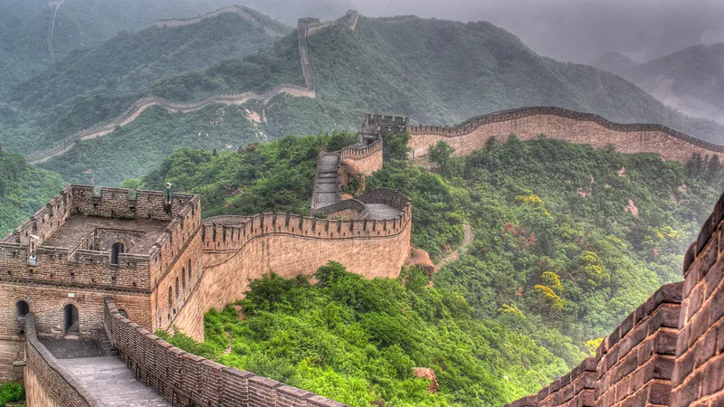
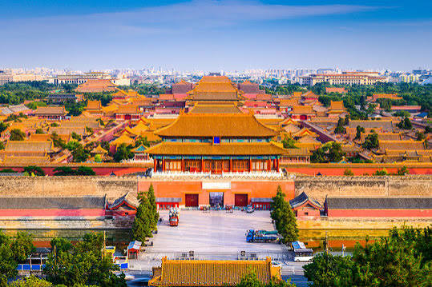
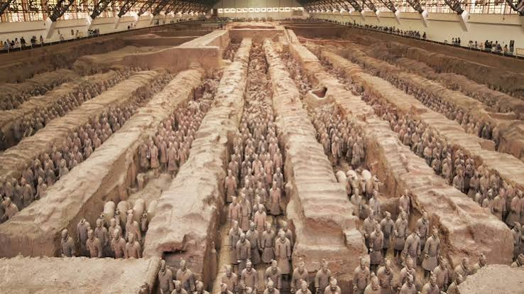
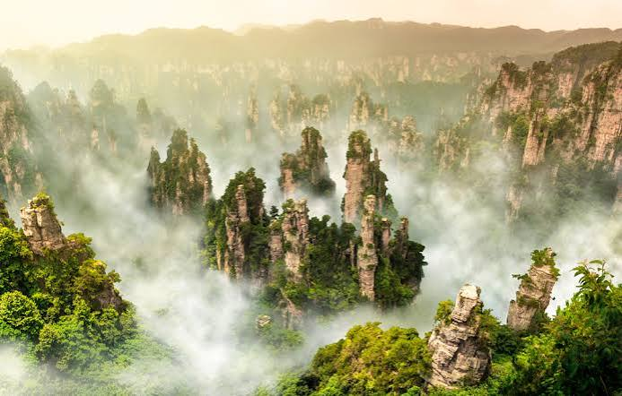
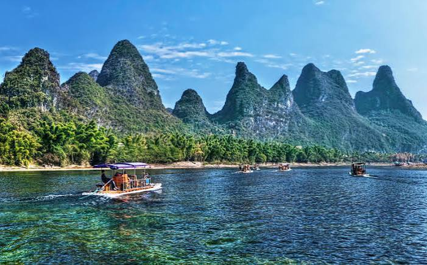
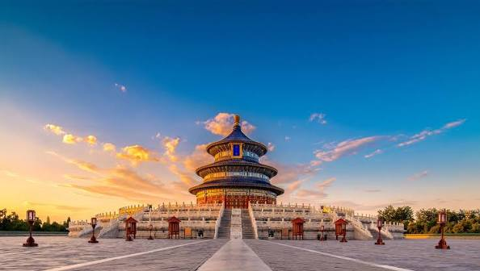

Popular Tourist Attractions
Discover six amazing places in China, from ancient landmarks to beautiful mountains and traditional gardens.

1. Great Wall of China
Located across northern China, the Great Wall is a famous historical landmark. It was built over many centuries for defense and is known for its impressive walls and mountain scenery.

2. Forbidden City
Located in Beijing, the Forbidden City was the imperial palace of Chinese emperors. Visitors can explore its grand halls, traditional architecture, and historical treasures.

3. Terracotta Army
Found in Xi'an, the Terracotta Army consists of thousands of life-sized clay soldiers created to guard the tomb of China's first emperor, Qin Shi Huang.

4. Zhangjiajie National Forest Park
Located in Hunan Province, Zhangjiajie is famous for its towering sandstone pillars, green forests, and breathtaking natural landscapes.

5. Li River
The Li River in Guangxi is known for its beautiful karst mountains and peaceful waters. Visitors can enjoy river cruises and scenic views around Guilin.

6. Temple of Heaven
Located in Beijing, the Temple of Heaven is a historic religious complex known for its beautiful architecture, cultural importance, and peaceful park.